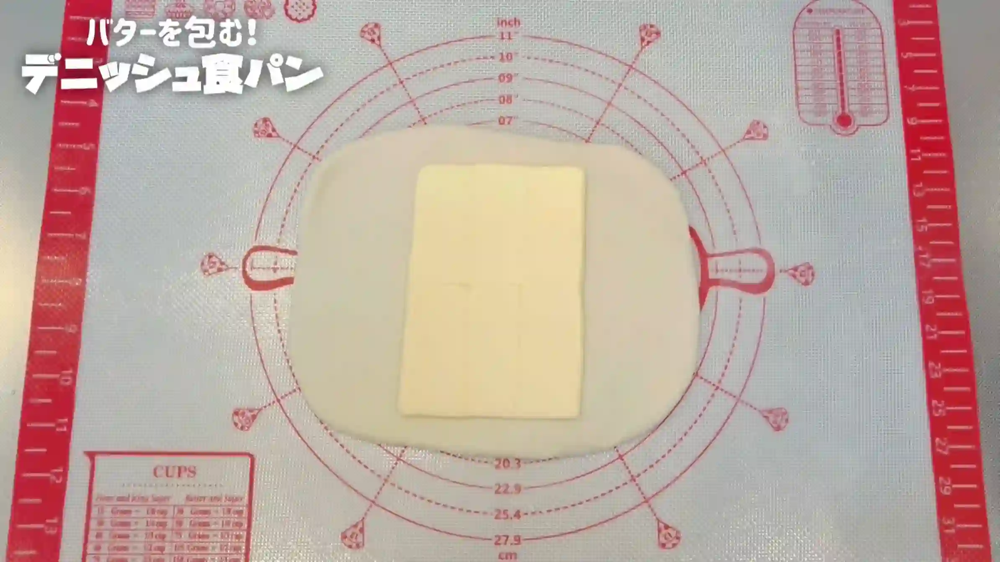
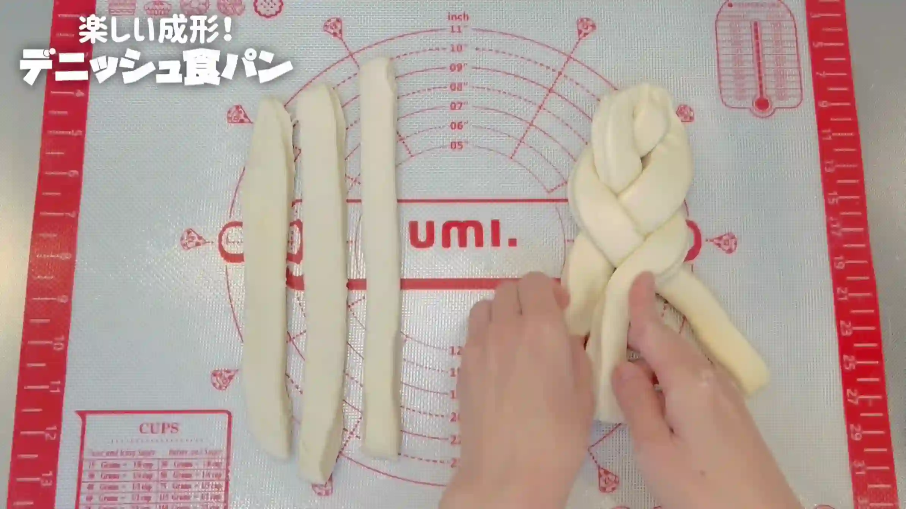
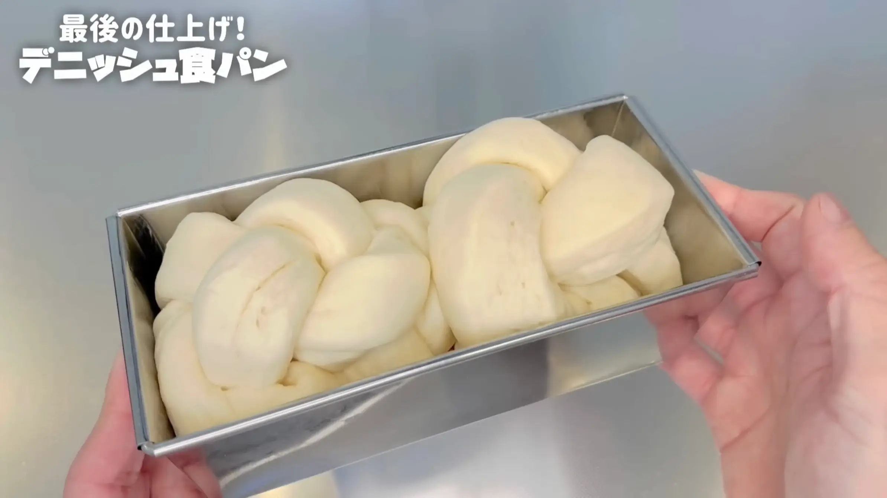

材料
※粉量を変えると自動計算されます
生地
折り込み用
型
作り方
生地
STEP 1
仕込み水を作る
ぬるま湯に砂糖とドライイーストを加え、よく混ぜ合わせます。
ぬるま湯に砂糖とドライイーストを加え、よく混ぜ合わせます。
STEP 2
粉類を加えて、混ぜる
強力粉と塩を合わせて、仕込み水を注ぎ、ヘラで1分半ほど混ぜます。粉っぽさがなくなり、生地がひとつにまとまれば、次へ進みます。
強力粉と塩を合わせて、仕込み水を注ぎ、ヘラで1分半ほど混ぜます。粉っぽさがなくなり、生地がひとつにまとまれば、次へ進みます。
STEP 3
バターを加え、手で捏ねる
バターを加え、手で2分ほど捏ねます。デニッシュは折り込み用のバターを使いますが、生地にもバターをしっかり入れることで、焼き上がりがしっとりとした食感になります。ここでは生地をツルッとするまで捏ね上げる必要はなく、短時間の「ちょい捏ね」で仕上げます。
バターを加え、手で2分ほど捏ねます。デニッシュは折り込み用のバターを使いますが、生地にもバターをしっかり入れることで、焼き上がりがしっとりとした食感になります。ここでは生地をツルッとするまで捏ね上げる必要はなく、短時間の「ちょい捏ね」で仕上げます。
STEP 4
室温で15分おく
乾燥しないようにラップをして、生地を休ませます。休ませることで生地がゆるみ、この後の作業で伸ばしやすくなります。
乾燥しないようにラップをして、生地を休ませます。休ませることで生地がゆるみ、この後の作業で伸ばしやすくなります。
STEP 5
生地をボウルの中で叩く
生地をボウルの中で1分ほど叩きます。最初は生地が少しベタつきますが、叩いていくうちにベタつきが取れてきます。生地の表面がつるっとなめらかになってきたらOKです。
生地をボウルの中で1分ほど叩きます。最初は生地が少しベタつきますが、叩いていくうちにベタつきが取れてきます。生地の表面がつるっとなめらかになってきたらOKです。
STEP 6
室温で2倍に膨らむまでおく
乾燥を防ぐためにラップをかけ、室温で一次発酵させます。60分が目安ですが、室温によって発酵の進み方は変わりますので、時間よりも膨らみ具合を優先してください。「生地が元の約2倍の大きさに膨らんだら」次へ進みます。
乾燥を防ぐためにラップをかけ、室温で一次発酵させます。60分が目安ですが、室温によって発酵の進み方は変わりますので、時間よりも膨らみ具合を優先してください。「生地が元の約2倍の大きさに膨らんだら」次へ進みます。
STEP 7
バターシートを作る
STEP 8
生地を広げてバターシートを置く
生地をバターシートの約2倍の大きさに伸ばし、中央にバターシートをのせます。画像のように上下に余裕を残しておくと、折り込み中にバターが端からはみ出しにくくなります。
生地をバターシートの約2倍の大きさに伸ばし、中央にバターシートをのせます。画像のように上下に余裕を残しておくと、折り込み中にバターが端からはみ出しにくくなります。

STEP 9
生地でバターシートを包む
バターシートを生地で包み、つなぎ目をしっかり閉じます。閉じ目が甘いとバターが外に出て、このあとの折り込みが大変になるため、端をきちんと合わせて押さえておきます。
バターシートを生地で包み、つなぎ目をしっかり閉じます。閉じ目が甘いとバターが外に出て、このあとの折り込みが大変になるため、端をきちんと合わせて押さえておきます。
STEP 10
「縦1：横2」に伸ばす（[動画 09:27]）
生地を横長に置き、手でやさしく押さえて、生地とバターを密着させながら厚みをそろえます。次にめん棒を縦方向にかけて表面をならし、「縦を1としたときに横が2」になるよう、横方向へ伸ばします。長さを測る必要はなく、「縦1：横2」くらいの長方形になればOKです。
生地を横長に置き、手でやさしく押さえて、生地とバターを密着させながら厚みをそろえます。次にめん棒を縦方向にかけて表面をならし、「縦を1としたときに横が2」になるよう、横方向へ伸ばします。長さを測る必要はなく、「縦1：横2」くらいの長方形になればOKです。
STEP 11
三つ折りする（1回目）
伸ばした生地を三つ折りにします。折り目を端までそろえておくと、バターの層がきれいに重なります。
伸ばした生地を三つ折りにします。折り目を端までそろえておくと、バターの層がきれいに重なります。
STEP 12
「縦1：横2」に伸ばす
三つ折りにした生地を、もう一度、「縦1：横2」くらいの長方形に伸ばします。生地が縮んでくるときは、無理に引っ張らず、少しずつ形を整えていきます。
三つ折りにした生地を、もう一度、「縦1：横2」くらいの長方形に伸ばします。生地が縮んでくるときは、無理に引っ張らず、少しずつ形を整えていきます。
STEP 13
三つ折りする（2回目）
再び三つ折りにします。
再び三つ折りにします。
STEP 14
30分冷蔵する
ラップで包み、30分ほど冷蔵庫で休ませます。バターを締め直しておくと、次に伸ばしやすくなります。生地が縮んで伸びにくいときは、そのまま伸ばさず、もう少し冷やしてから進めてください。
ラップで包み、30分ほど冷蔵庫で休ませます。バターを締め直しておくと、次に伸ばしやすくなります。生地が縮んで伸びにくいときは、そのまま伸ばさず、もう少し冷やしてから進めてください。
STEP 15
型にバターを塗る
焼き上がったデニッシュを型から取り出しやすくするため、型の内側にバターを塗っておきます。
焼き上がったデニッシュを型から取り出しやすくするため、型の内側にバターを塗っておきます。
STEP 16
「縦1：横2」に伸ばす
冷蔵した生地を、また縦1：横2くらいの長方形に伸ばします。硬くて伸びにくいときは、中心からめん棒で押すようにして、全体を均等に伸ばします。やわらかさが出てきたらめん棒を転がすと、きれいに伸ばせます。
冷蔵した生地を、また縦1：横2くらいの長方形に伸ばします。硬くて伸びにくいときは、中心からめん棒で押すようにして、全体を均等に伸ばします。やわらかさが出てきたらめん棒を転がすと、きれいに伸ばせます。
STEP 17
三つ折りする（3回目）
三つ折りにして、最後の折り込みを行います。
三つ折りにして、最後の折り込みを行います。
STEP 18
25㎝×18㎝に伸ばす
このあと6本の短冊に切って三つ編みにするため、生地を25㎝×18㎝ほどの長方形に伸ばします。ここまで折り込むと生地が硬くなり、伸ばしにくくなっていますが、時間をかけてもいいので、全体の厚みがそろうようにゆっくり伸ばしてください。
このあと6本の短冊に切って三つ編みにするため、生地を25㎝×18㎝ほどの長方形に伸ばします。ここまで折り込むと生地が硬くなり、伸ばしにくくなっていますが、時間をかけてもいいので、全体の厚みがそろうようにゆっくり伸ばしてください。
STEP 19
6本の短冊状に切る
生地を6本の短冊状に切り分けます。
生地を6本の短冊状に切り分けます。
STEP 20
三つ編みをする（[動画 15:47]）
6本の生地を3本×2にわけ、三つ編みにします。焼くと生地が膨らむため、ここでは生地をきつく編まず、なるべく自然な力でゆるめに編むのが、ふんわり焼き上げるコツです。
6本の生地を3本×2にわけ、三つ編みにします。焼くと生地が膨らむため、ここでは生地をきつく編まず、なるべく自然な力でゆるめに編むのが、ふんわり焼き上げるコツです。

STEP 21
三つ編みした生地を丸める（[動画 16:06]）
三つ編みにした生地をふんわり丸めます。巻き終わりを中に入れ込むと、焼き上がりが整いやすくなります。
三つ編みにした生地をふんわり丸めます。巻き終わりを中に入れ込むと、焼き上がりが整いやすくなります。
STEP 22
型に入れる
丸めた生地を型に入れます。
丸めた生地を型に入れます。
STEP 23
室温で50分ほどおく
ラップをかけて二次発酵させます。50分ほどが目安ですが、時間より状態を見て、生地が型いっぱいにふくらんだら焼成に進みます。室温によって発酵の進み方は変わります。
ラップをかけて二次発酵させます。50分ほどが目安ですが、時間より状態を見て、生地が型いっぱいにふくらんだら焼成に進みます。室温によって発酵の進み方は変わります。

STEP 24
オーブンを250℃に予熱する
焼成前にオーブンを250℃までしっかり予熱しておきます。生地を入れるときに十分な温度になっているよう、焼成前にあらかじめ予熱しておきます。
焼成前にオーブンを250℃までしっかり予熱しておきます。生地を入れるときに十分な温度になっているよう、焼成前にあらかじめ予熱しておきます。
STEP 25
牛乳を塗り、オーブン210℃で25分焼く
焼成前に生地の表面へ牛乳を薄く塗ります。表面にきれいな焼き色がつきやすくなり、香ばしい仕上がりになります。焼き時間は目安とし、ご家庭のオーブンに合わせて調整してください。
焼成前に生地の表面へ牛乳を薄く塗ります。表面にきれいな焼き色がつきやすくなり、香ばしい仕上がりになります。焼き時間は目安とし、ご家庭のオーブンに合わせて調整してください。
バターシート
STEP 1
バターを切り、ラップに並べる
市販のバターに入っている目盛りを目安に10gずつ6枚に切り、ラップの上に並べます。多少大きさに誤差があっても仕上がりにはほぼ影響しないため、細かく計測しなくても大丈夫です。
市販のバターに入っている目盛りを目安に10gずつ6枚に切り、ラップの上に並べます。多少大きさに誤差があっても仕上がりにはほぼ影響しないため、細かく計測しなくても大丈夫です。
STEP 2
ラップをピッタリ閉じる
長方形に並べたバターの大きさに合わせて、ラップをぴったり閉じます。バターがはみ出してこないように、しっかりと閉じておきます。
長方形に並べたバターの大きさに合わせて、ラップをぴったり閉じます。バターがはみ出してこないように、しっかりと閉じておきます。
STEP 3
めん棒で平らにならす
めん棒で押しながら、バターを一枚のシートになるようになじませます。バター同士の繋ぎ目が見えなくなればOKです。
めん棒で押しながら、バターを一枚のシートになるようになじませます。バター同士の繋ぎ目が見えなくなればOKです。
STEP 4
冷蔵する
バターシートを冷蔵して、折り込みやすい硬さに整えます。生地で包むときにバターがやわらかすぎると扱いにくいため、しっかり冷やしておきます。
バターシートを冷蔵して、折り込みやすい硬さに整えます。生地で包むときにバターがやわらかすぎると扱いにくいため、しっかり冷やしておきます。
動画でチェック
おいしく作るためのワンポイントコラム
サクサクの層とバターの芳醇な香りがたまらない『デニッシュ食パン』！「折り込みパンって難しそう…」と思っている方にこそ試してほしい、特別な道具を使わず簡単な折り込みで焼き上げる自慢のレシピです！おうちで楽しく美味しく焼くための「3つのコツ」をまとめました。
① 翌日もしっとり感が続く生地
デニッシュはサクサク感を出すために薄力粉を混ぜるレシピも多いですが、今回はあえて強力粉100%で仕込むのがポイント！強力粉だけで作ることで、日が経ってもパサつかず、中がしっとりふわふわな食感をキープできます。また、生地自体にしっかりバターを加えることも重要です。折り込み用でバターを多く使うため生地用は減らしがちですが、生地にも適量入れることでしっとりリッチに仕上がるだけでなく、折り込み時に生地が伸びやすくなる嬉しいメリットもあります。
② 定規いらずなバターシート
バターシートを作るときに「〇cm×〇cmに伸ばす」と細かく測る必要はありません！市販バターの包み紙にある目盛りを目安に薄切りで6枚切り出し、並べてラップ越しにめん棒で馴染ませるだけでOK。多少の誤差は仕上がりに響かないので、気軽に作りたい方にぴったりの裏ワザです。
③ おなお流折り込み
生地を伸ばす際も、細かい採寸は一切不要！バターシートを包んだら、縦横の比率がだいたい『1：2』になるよう横向きに伸ばしていくだけで大丈夫です。強力粉生地は縮みやすいため「少し大きめに伸ばす」ことを意識し、1：2になったら三つ折りを繰り返せば、測らなくても綺麗な層が誕生します！
一度覚えれば驚くほど簡単なおなお流の折り込みは、ハードルが高く感じるデニッシュ作りにとってもおすすめ。三つ編みにして型に入れる成形は、多少折り込みが歪になっても焼き上がりが美しく決まる、私の大好きな成形です！YouTubeでもご好評いただいているレシピですので、ぜひコメント欄も参考にしてみてください。
① 翌日もしっとり感が続く生地
デニッシュはサクサク感を出すために薄力粉を混ぜるレシピも多いですが、今回はあえて強力粉100%で仕込むのがポイント！強力粉だけで作ることで、日が経ってもパサつかず、中がしっとりふわふわな食感をキープできます。また、生地自体にしっかりバターを加えることも重要です。折り込み用でバターを多く使うため生地用は減らしがちですが、生地にも適量入れることでしっとりリッチに仕上がるだけでなく、折り込み時に生地が伸びやすくなる嬉しいメリットもあります。
② 定規いらずなバターシート
バターシートを作るときに「〇cm×〇cmに伸ばす」と細かく測る必要はありません！市販バターの包み紙にある目盛りを目安に薄切りで6枚切り出し、並べてラップ越しにめん棒で馴染ませるだけでOK。多少の誤差は仕上がりに響かないので、気軽に作りたい方にぴったりの裏ワザです。
③ おなお流折り込み
生地を伸ばす際も、細かい採寸は一切不要！バターシートを包んだら、縦横の比率がだいたい『1：2』になるよう横向きに伸ばしていくだけで大丈夫です。強力粉生地は縮みやすいため「少し大きめに伸ばす」ことを意識し、1：2になったら三つ折りを繰り返せば、測らなくても綺麗な層が誕生します！
一度覚えれば驚くほど簡単なおなお流の折り込みは、ハードルが高く感じるデニッシュ作りにとってもおすすめ。三つ編みにして型に入れる成形は、多少折り込みが歪になっても焼き上がりが美しく決まる、私の大好きな成形です！YouTubeでもご好評いただいているレシピですので、ぜひコメント欄も参考にしてみてください。


スーパーの食材や100均のパウンド型で手軽に作る『デニッシュ食パン』のレシピです！難しそうでハードルの高いデニッシュですが、おなお流の折り込み法でとっても簡単に作ることができます。コラムでは「翌日もしっとり感が続く生地」「定規いらずなバターシート」「おなお流折り込み」の3つのコツをご紹介します。